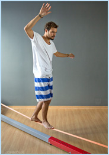

Neo Pilates
O método foi desenvolvido pela fisioterapeuta catarinense, Amanda Braz, em 2010 e está sendo reconhecido em todo o país. A idéia surgiu do estudo aprofundado da contrologia, verdadeiro nome do método Pilates. O controle, a concentração, a respiração, a contração do abdome, o alinhamento do corpo, a fluidez e a precisão dos movimentos, caracterizam a técnica.
No Neo Pilates esses princípios são preservados. O Neo Pilates une, além desses princípios, outras 3 técnicas: o Pilates, o Treinamento Funcional e atividades circenses (circo). Pra quem busca exercícios físicos inovadores que auxiliem na força, flexibilidade, equilíbrio, emagrecimento e diversão.
No Neo Pilates esses princípios são preservados. O Neo Pilates une, além desses princípios, outras 3 técnicas: o Pilates, o Treinamento Funcional e atividades circenses (circo). Pra quem busca exercícios físicos inovadores que auxiliem na força, flexibilidade, equilíbrio, emagrecimento e diversão.
Skier
Melhora a postura, equilíbrio e movimento funcional em um ritmo acelerado, com exercícios desafiantes, diferentes de qualquer outro método.

Sua origem vem da escalada e popularizou-se como treino de equilíbrio, inspirado na corda bamba do circo.
Slackline
O slackline é um esporte de equilíbrio sobre uma fita de nylon, estreita e flexível, praticado geralmente a uma altura de 30cm do chão.Sua origem vem da escalada e popularizou-se como treino de equilíbrio, inspirado na corda bamba do circo.